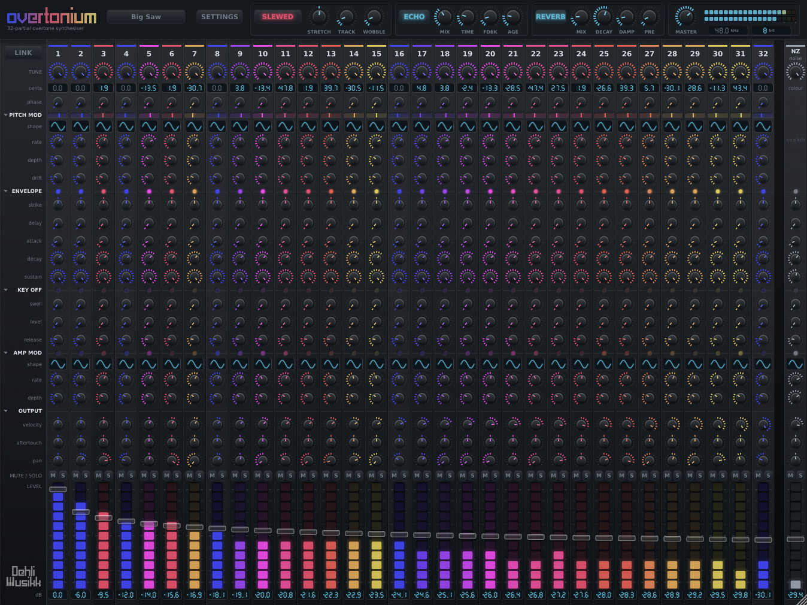
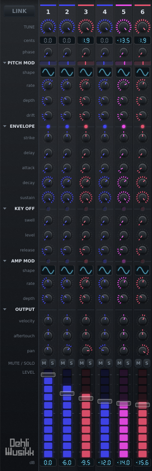
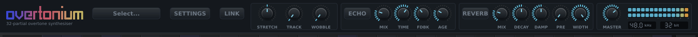

An additive synthesiser laid out like a 32-channel mixer. Every channel is one sine oscillator locked to a harmonic of the played note, and every channel has its own tuning, envelope, modulation and place in the stereo field.
Additive synthesis usually hides its partials behind a spectrum drawing or a handful of macro controls. This puts all of them on the surface, as faders, and gives each one the controls a channel on a desk would have. Shaping a sound is mixing it.
- Formats
- VST3, Standalone, AU on macOS, LV2 on Linux
- Platforms
- macOS, Windows, Linux
- Partials
- 32, plus a noise channel
- Licence
- AGPLv3

The control worth reaching for first
TUNE sweeps each partial continuously between equal temperament and just intonation. At the just end the partial sits at an exact whole-number ratio with the fundamental and the whole stack fuses into one timbre. At the equal end each partial snaps to the nearest semitone and the same stack smears into a chord.
Two of the factory presets, Just Saw and Equal Saw, are identical except for that one control. They sound nothing alike.
Nothing about the tuning is hard-coded. For harmonic n the just interval is 1200 * log2(n) cents, the equal position is that rounded to the nearest semitone, and TUNE dials in the remainder. Rounded to whole cents the derivation reproduces the familiar overtone table, which the test suite asserts so it cannot quietly drift.
Three axes of tuning
TUNE decides how the series is spelled. Two more controls decide what kind of body is producing it and what the keyboard underneath is tuned to.
Stretch
Nothing real rings at whole-number multiples. A string with any stiffness has partials at n * f0 * sqrt(1 + B * n^2), sharp of the harmonic and increasingly so up the series, and that is why a piano sounds like a piano rather than like a sawtooth. STRETCH is that, dialled by what it does to the top partial. A little of it is piano stretch. A lot of it is a bell.
Temperament
The keyboard itself can be tuned to equal, just, Pythagorean, quarter-comma meantone, Werckmeister III or Young, on any root, at any reference pitch from 415 to 466 Hz. They are derived from the circle of fifths rather than copied from tables of cents, so meantone's major third comes out pure to a thousandth of a cent because a quarter comma is genuinely a quarter comma.
Tracking
Real instruments lose their top as you play up the keyboard, because the body has a rolloff that stays where it is while the partials climb through it. TRACK is that rolloff, measured against the fundamental so high notes get duller rather than quieter.
What every channel has
Each of the 32 strips carries a tuning blend and a start phase, pitch modulation with its own rate, depth and random drift, a full envelope, tremolo, velocity and aftertouch sensitivity, pan, mute, solo, a fader and a meter. The noise channel has all of it except pitch.
The envelope has two halves. Delay, attack, decay and sustain on the way in, and on the way out a key-off stage that swells to a level of its own before releasing from there. Above the sustain that is a release click or a bloom, the sound a damper or a hammer return makes. Below it, it is the fast initial drop into a long tail that a struck string actually has. How hard you let the key go can drive it.
Six hundred and seventy-two per-partial controls is a lot to move by hand, so LINK gangs the strips. Dragging one knob moves the same knob on the others, relatively, so a spectrum you have shaped keeps its shape. It can reach every channel, or the odd ones, or the octaves, and it can fan the movement out across the series rather than applying it evenly.
Aftertouch adds to a fader rather than scaling it, so a strip sitting at silence can be brought in by leaning on the key. With MPE switched on, each note gets its own copy of all 33 of those destinations, so pressing into one note of a chord brings in that note's upper partials and leaves the rest of the chord alone. An ordinary keyboard plays either way.
The cents a partial is tuned by and the level its fader is at are both reported back as seven-segment readouts, the same ones the converter settings use on the bar. A partial left in equal temperament says Et, and a fader all the way down says -inF.
The rules that divide a strip into groups each carry a lamp, showing what that group is doing to this partial as you play: how far up its envelope it is, which side of the key-off it is on, how hard the tremolo is pulling, and a needle for where pitch modulation has it. They read from the voices rather than from the knobs, so nothing pulses over silence.
Channels are coloured by interval class, so octaves, fifths and thirds stay visible while you scroll across 32 of them. Pointing at a knob picks out its row all the way across the mixer and brackets the channel it is on, so where the two cross is the control a drag would move.

Across the whole instrument

A wobble, which is a warped record under the whole instrument. A slow warp near once round a 33 rpm disc, a faster wander on top, and now and then a sharp slip that bends hard and settles back. The slips grow in both rate and size with the square of the control, so a low setting is a tired turntable and a high one is a transport falling over itself. It sits ahead of the echo, so the repeats inherit what it did rather than wobbling on their own.
A tape echo, modelled on the parts of a tape loop the ear notices. Moving the time knob winds the tape rather than cutting to the new setting, so the repeats slide in pitch on the way. Stereo is two tape paths side by side, each fed its own channel and coming back on the side it went out on, with motors running at slightly different speeds so the repeat comes back doubled rather than bounced.
A reverb built as a feedback delay network, whose room is sized from its decay time, since a long tail in a small room is a spring rather than a place.
And a converter, shown as two seven-segment readouts under the output meter. Turning the sample rate down is a genuine cut rather than a filter over the top: the whole voice pool renders slower, which costs a fifth as much at 8 kHz, and the partials above the new ceiling fold back down instead of disappearing.
The presets
Sixteen ship with it, and all but a handful were dialled in on the panel and converted straight from the saved file, so what ships is what was played rather than something written afterwards to approximate it.
Big Saw, Cathedral, Drawbar Organ, Equal Saw, Glass Armonica, Init, Just Saw, Lo-fi, Music Box, Odd Harmonics, Shimmer, Slow Pad, Struck Bell, Tape Choir, Vibraphone and Wurli.
Saving your own writes one small file per preset into your user application data folder, and the menu reads that folder every time it opens. A preset carries the patch and nothing else: loading one never moves your master fader, your tuning or your window.
Questions
- Which hosts does it run in?
- It builds as a VST3 on all three platforms, an Audio Unit on macOS and an LV2 on Linux, so it loads anywhere those formats do. There is a standalone build as well, if you would rather not open a DAW at all.
- Is it free?
- Yes, and free software rather than only free of charge. It is released under the AGPLv3, which follows from JUCE, and the whole source is on GitHub.
- What is additive synthesis?
- Building a sound by adding sine waves together rather than by filtering a rich one down. Every timbre is a stack of partials at different frequencies and levels, and additive synthesis hands you those partials directly. Overtonium gives you 32 of them, one per mixer channel.
- Can it do microtonal and just intonation?
- Both, and separately. TUNE sweeps each partial between its equal-tempered position and its exact whole-number ratio, which is about how the timbre itself is spelled. The keyboard underneath is tuned on its own, to equal, just, Pythagorean, quarter-comma meantone, Werckmeister III or Young, on any root, at any reference pitch from 415 to 466 Hz.
- Does it support MPE?
- Yes. With MPE switched on, pitch bend and pressure arrive per note, and pressure has its own amount on every one of the 33 channels, so pressing into one note of a chord brings in that note's upper partials and leaves the rest alone. An ordinary single-channel keyboard plays either way.
- How heavy is it?
- Eight voices of 32 partials each, with every modulator running, costs about 7% of one core. Sixteen voices costs about 14%. Turning the render rate down is a real saving rather than an effect: at 8 kHz the whole voice pool costs a fifth as much.
Where it came from
Overtonium is the third instrument in a line, and the first that generates its sound rather than playing it back.
The first was the Voltage Controlled Cassette Organ, in 2023. A Korg CX-3 sampled through cassette tape, every note of every drawbar recorded as its own file. The tape was the point of it: wow, flutter and random warbles gave the organ a movement like a chorus or a rotary speaker, but without the fixed rate a modulation effect has. It was recorded to tape twice, which doubled it, and because no tape deck plays back the same way twice the two passes never quite agreed with each other.
The second was EDB-Orgel, in 2024, which kept the drawbar workflow and put four digital synthesis types under it instead of an organ.
Both gave every drawbar its own envelope and LFO, and that is the idea this one is built out of. A drawbar is a partial. Nine of them shaped separately already sounds unlike an organ, so thirty-two of them, each with a full channel of controls, is the same idea taken as far as it goes. Computing them rather than playing them back is what makes TUNE possible at all: a sampled partial is stuck at the pitch it was recorded at, and a computed one can be swept between equal temperament and its exact whole-number ratio.
The ancestry shows up in the details. DRIFT is the cassette's random warble, per partial. WOBBLE is the same thing under the whole instrument. The tape echo's two paths, each with its own motor speed and its own random stream, are the double tracking, and its AGE control never quite reaches zero for the same reason the two tape passes never agreed: a transport that held speed exactly would put the repeat back in mono, and there is no such transport.
Both earlier instruments are sample libraries, sold at Dehli Musikk. This one is free software.
Getting it
Overtonium is free software under the AGPLv3. Installers for macOS and Windows, and a zip for Linux, are on the releases page. Every release carries a zip alongside the installer holding the same builds loose, for anyone without administrator rights or with plugin folders of their own.
macOS gets a .pkg with VST3, Audio Unit and standalone, and you choose which of the three to install. It is a universal binary, so one download covers Apple Silicon and Intel, and it is signed and notarised, so it opens without a warning. Logic and GarageBand only look for new Audio Units when they start, so restart them after installing.
Windows gets an .exe with VST3 and standalone. It is not signed, so SmartScreen says the publisher is unknown: choose "More info" and then "Run anyway", or build from source instead, which takes one command.
Linux has no installer. The zip holds VST3, LV2 and standalone, and the two plugin folders go in ~/.vst3 and ~/.lv2.
Building from source
You need CMake 3.22 or newer and a C++17 compiler. JUCE is downloaded at configure time, so there is nothing else to install on macOS or Windows.
git clone https://github.com/benjamindehli/overtonium.git
cd overtonium
cmake -B build -DCMAKE_BUILD_TYPE=Release
cmake --build buildOn macOS the plugins are copied into your user plugin folders as part of the build. Linux needs a handful of development packages first, which the readme lists. Every push is built and tested on all three platforms.